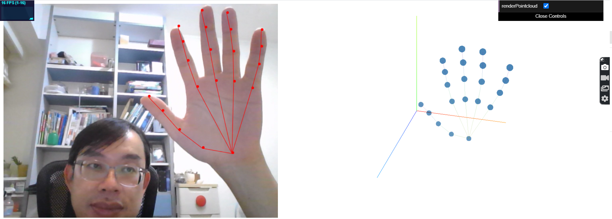
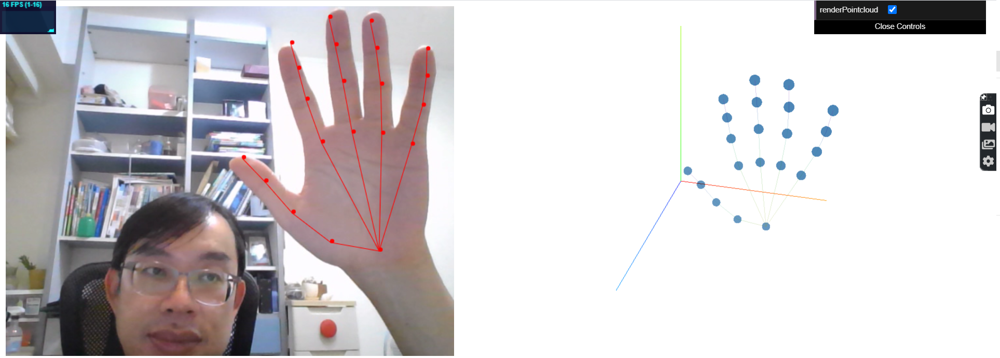
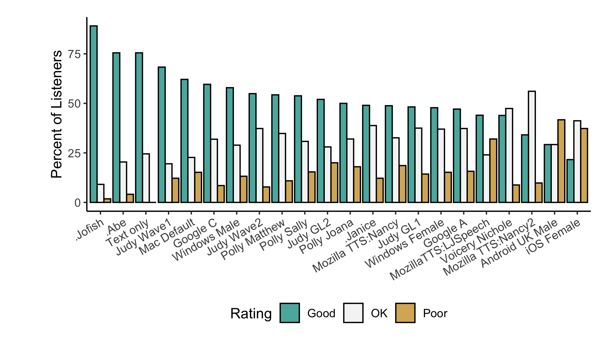

Tensorflow.js POC 13: Handpose and its potential POCs
Overview
| Git Repo | Status | Progress | Comments |
|---|---|---|---|
 |
tensorflow.js POC #1- and WhoIsTalking for PIC #9. |

| Git Repo | Status | Progress | Comments |
|---|---|---|---|
|
tensorflow.js POC #1- and WhoIsTalking for PIC #9. |


Projects use git/yaml script to setup CI/CD pipeline and deployment flows.
Easy to trasnfer from localhost to server via gitlab-runner


| Git Repo | Status | Progress | Comments |
|---|---|---|---|
 |
| Servers | OS | Monitoring | ||
|---|---|---|---|---|
| dlc | Ubuntu18.04 | dlc, ubuntu, GPU | ||
| dlc1 | Ubuntu18.04 | dlc1, ubuntu, GPU | ||
| dlc2 | Ubuntu18.04 | dlc2, ubuntu |
You will need to import your project for gitlab CI/CD only by add your project into https://tailab.dlc.com:9443/root/git-sync-mirror. After that, bitbucket code will be automatically syced to gitlab server.
Step 1: Check with wj.lee@dlc.com and ask for admin account of dlc
Step 2: With ssh or RPD to login to dlc
Step 1:
Step 2:
Step 4:
or
Step 5.1:
First, by command line for docker gitlab-runner
PS: YOUR-TOKEN can be obtained from Gitlab Server, in top menu, Admin Area->Runners to get the registration token. If you have no idea how to get '/etc/gitlab-runner/certs/ssl.csr', please check step XX.
Second, by command line for shell gitlab-runner
Step 6: Allow passwordless sudo
execute
if no joe command, please install
Step 6.1: Modify /etc/gitlab-runner/config.toml
and change concurrent from 1 to 40 or more. Also, for shell runner, please also add
Step 7: Install git-lsf
Step 8: Verify gitlab-runner
Step 9:
For ubuntu 20.04, please do this to prevent Gitlab runner shell executor doesn't work on Ubuntu focal
Step X: If you want to upgrade gitlab-runner
This is optional step. If you want to upgrae gitlab-runner to newest one. Please do the following commands
Step XX: If you met the problem like below or you have no idea how to get '/etc/gitlab-runner/certs/ssl.csr'
| Git Repo | Status | Progress | Comments |
|---|---|---|---|
 |
Pytorch POC #2 | ||
 |
Pytorch POC #3 | ||
 |
Pytorch POC #4 |

pinreset and its pin alogirthm
Here gives a demo for amplitude cohort download and query JSON-Server for Amplitude User Cohorts
| Git Repo | Status | Progress | Comments |
|---|---|---|---|
|
Pytorch POC #2 | ||
|
Pytorch POC #3 | ||
|
Pytorch POC #4 |
Based on last time keyword spotting topics on Chimay, I even mention items about TTS (text-to-speech) and showed POCs. Here I adopt Opentts to create a API server for speech and later ultrasound generation from Web.

In live opentts demo site, you can check the conventional (non-deep learning) speech synthesis (marytts, nanotts) and deep-learning ones (Mozillatts with Tacotron and Tacotron2). Deep-learing ones provide a beeter speech quality. A public MOS test results as below also show similar conclusions.

Demo wave file as

Swagger API also includes the following:
The following diagram is from mozzila project. It shows the whole picture of nature lanaugege iteration with end users. But, of course, it will be a long way to go.